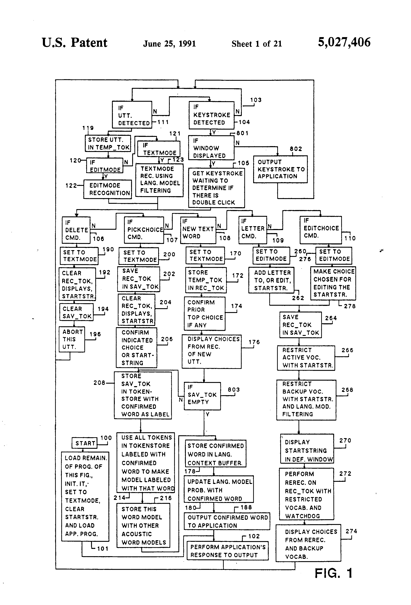

DragonDictate
The first large-vocabulary speech-to-text dictation: 30,000 words, one $9,000 DSP board, and an 'Oops' command

Overview
DragonDictate-30K was the first large-vocabulary speech-to-text dictation system and arguably the single most important speech recognition product of the HCI era. Unveiled to the press on March 19, 1990 in Newton, Massachusetts, it used an 8-bit ISA peripheral card, required a 386-based PC with 6MB RAM, and shipped with a Shure noise-canceling headset microphone. The system could recognize 30,000 words — an order of magnitude beyond anything previously available for personal computers.
Key features: no initial training required for 16,000 frequent words (speaker-independent models built-in); adaptive vocabulary that dynamically built and refined speech models for up to 30,000 words online during use; an 80,000-word dictionary with easy new-word addition; and the iconic 'Oops' command for error correction. The system operated in discrete-utterance mode — users had to pause distinctly between each word — producing approximately 35 words per minute.
The Bakers' path to DragonDictate is itself remarkable. James and Janet Baker developed Hidden Markov Model (HMM) speech recognition at CMU and IBM Research (1975–1979), then worked at Verbex (Exxon subsidiary, 1979–1982). When Exxon exited the speech business, they founded Dragon Systems from their living room with personal savings in 1982. DragonDictate was the culmination of a decade of research, formally presented by Janet Baker at Eurospeech 1989 in Paris. The product defined the speech dictation interaction model — discrete-word input, adaptive vocabulary, 'Oops' correction, voice commands ('Go to Sleep'/'Wake Up') — that dominated consumer speech recognition until Dragon NaturallySpeaking introduced continuous recognition in 1997.
Dragon Systems was ultimately acquired by Lernout & Hauspie in 2000 (later sold to ScanSoft, which became Nuance, now part of Microsoft). DragonDictate's direct descendant, Dragon NaturallySpeaking, remains one of the longest-running consumer software product lines in computing history.
Deep dive
James and Janet M. Baker were pioneers of Hidden Markov Model speech recognition. After working at CMU and IBM Research (1975–1979), they joined Verbex (an Exxon subsidiary) as VP of Advanced Development and VP of Research respectively. When Exxon exited the speech business in 1982, they founded Dragon Systems from their living room in Newton, Massachusetts, using personal savings. The company grew to 300 employees and remained independent until 2000. Janet Baker presented the DragonDictate paper at Eurospeech 1989 in Paris, establishing the system's technical foundations.
DragonDictate-30K required a 386-based PC with 6MB RAM and an 8-bit ISA DSP peripheral card. It shipped with a Shure noise-canceling headset microphone. The system recognized 30,000 words: 16,000 frequent words and phrases built-in as speaker-independent models (no training required), with another 14,000+ trainable on-the-fly as users added vocabulary. An 80,000-word dictionary supported easy new-word addition. Voice Console commands included 'Go to Sleep' and 'Wake Up' for system control.
The fundamental interaction pattern: user speaks a word, pauses, speaks the next word. If recognition is wrong, the user says 'Oops' and the system presents alternatives. The user chooses the correct word and DragonDictate adapts its model to reduce future errors. This discrete-utterance, adaptive-correction loop was the defining interaction model for speech dictation from 1989 until Dragon NaturallySpeaking introduced continuous recognition in 1997. At ~35 words per minute, DragonDictate was slower than skilled typing but faster than handwriting — and completely life-changing for users who couldn't type at all.
Dragon Systems was acquired by Lernout & Hauspie in March 2000 for approximately $460 million in stock. L&H's subsequent bankruptcy and fraud scandal led to the assets being sold to ScanSoft (now Nuance Communications) in 2001. Nuance continued the Dragon line, and Dragon NaturallySpeaking remains one of the longest-running consumer software product lines. In 2021, Microsoft acquired Nuance for $19.7 billion. DragonDictate's discrete-word interaction model also directly influenced Kurzweil Voice, IBM ViaVoice, and every subsequent dictation product. The 'Oops' correction paradigm, adaptive vocabulary, and voice-command/talk mode switching are all direct descendants of DragonDictate's 1989 design.
Team & pioneers
- James K. Baker. CEO and co-founder, Dragon Systems. HMM speech recognition pioneer (CMU, IBM Research, Verbex)
- Janet M. Baker. President and co-founder, Dragon Systems. Presented DragonDictate at Eurospeech 1989. HMM speech recognition pioneer
- Dragon Systems, Inc.. Newton, Massachusetts. Founded 1982, grew to ~300 employees by 1990s
Media
Sources
- Janet M. Baker, 'DragonDictate-30K: Natural Language Speech Recognition,' Eurospeech 1989, Paris
- Seattle Times, 'Dragon Systems dictation software understands 30,000 words,' March 19, 1990
- Deseret News, 'Dragon Dictate Lets Computer Users Just Give Machines a Talking,' March 23, 1990
- Simson Garfinkel, 'Enter the Dragon,' MIT Technology Review, September 1998
- ACL Anthology — DragonDictate papers (H89-1019, H90-1087)
- Dragon Systems (Wikipedia)